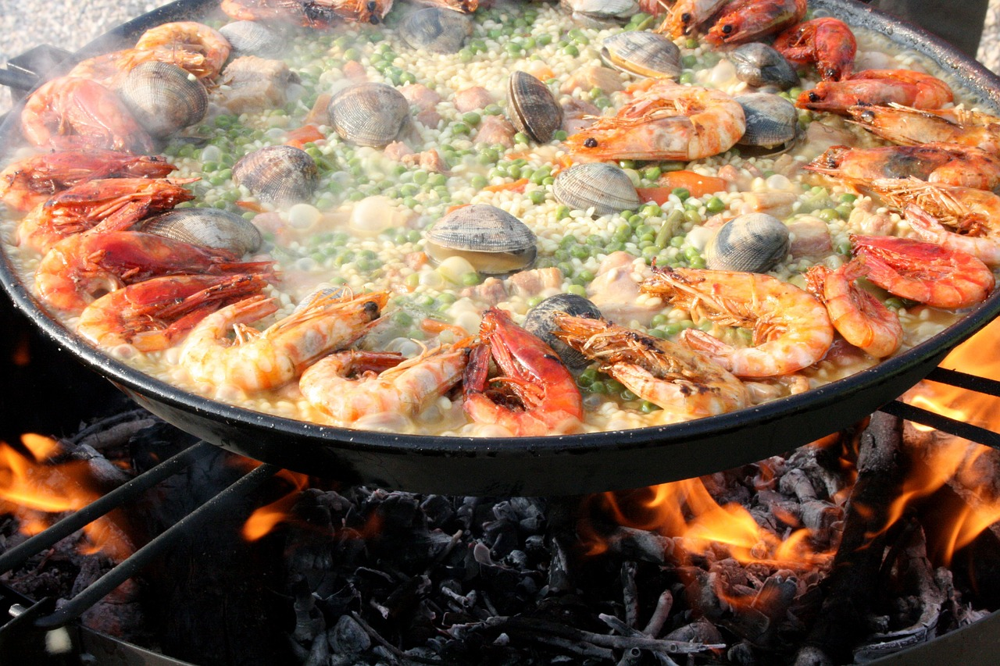
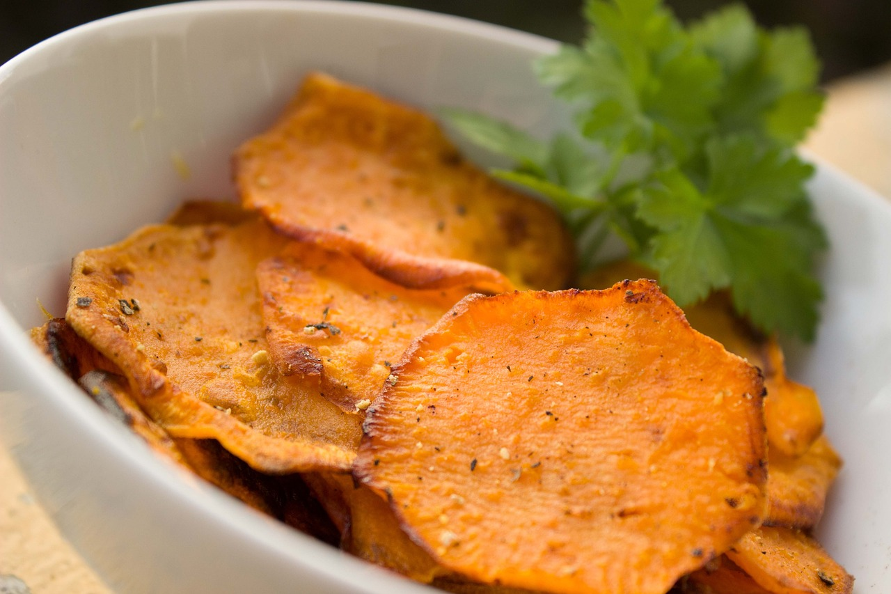
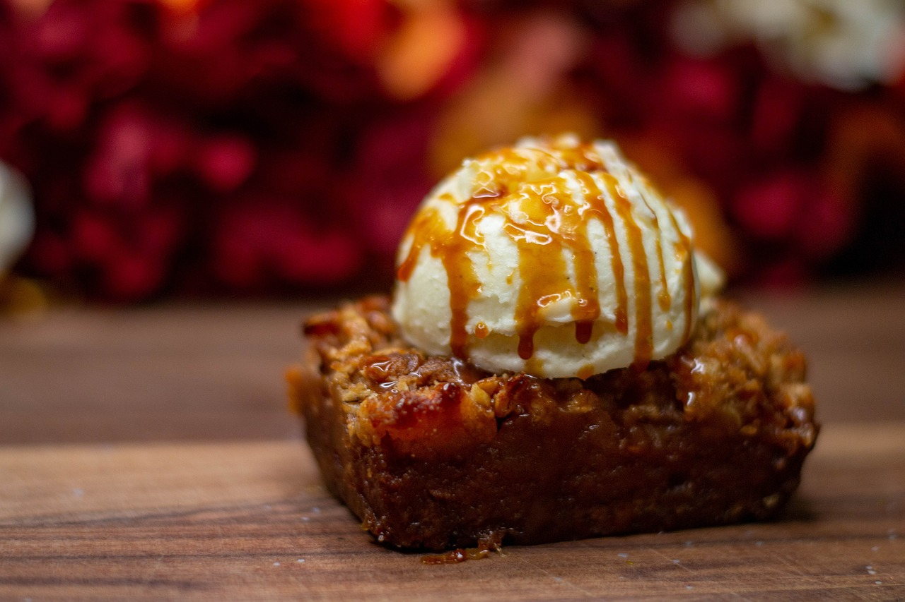

Our Menu
Dinner Menu
Starters
Rusty Trail Soup
A rich and comforting soup made with wild mushrooms, smoked bacon, and hearty barley, garnished with fresh herbs and a drizzle of truffle oil.
Survival Queso Fundido
A molten cheese dip with spicy chorizo, served with warm tortilla chips and a side of fresh salsa. Perfect for sharing—or not!

Main Courses
Nomad’s Steak
A perfectly grilled ribeye steak seasoned with a smoky rub, served with roasted garlic mashed potatoes and sautéed green beans. Accompanied by a rich peppercorn sauce.
Scavenger’s Seafood Paella
A flavorful rice dish loaded with shrimp, mussels, clams, and chorizo, cooked in a saffron-infused tomato broth with peas and bell peppers.
Sides
Rusty Roasted Corn
Sweet corn on the cob, roasted to perfection and brushed with a spicy lime butter.
Forged Sweet Potato Fries
Crispy sweet potato fries seasoned with a blend of spices, served with a side of creamy dipping sauce.
Desserts
Scavenger’s Chocolate Lava Cake
A decadent chocolate cake with a gooey molten center, served warm with a scoop of vanilla ice cream and a drizzle of raspberry sauce.
Caramel Apple Harvest Crumble
Warm apple slices, spiced with cinnamon, topped with buttery crumble and drizzled with rich caramel sauce. A cozy, indulgent finish to your meal.
